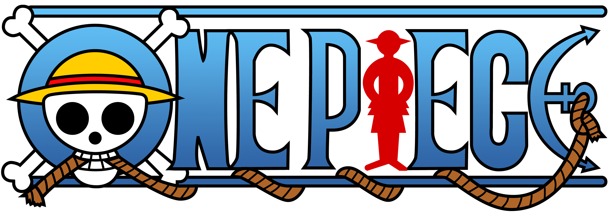
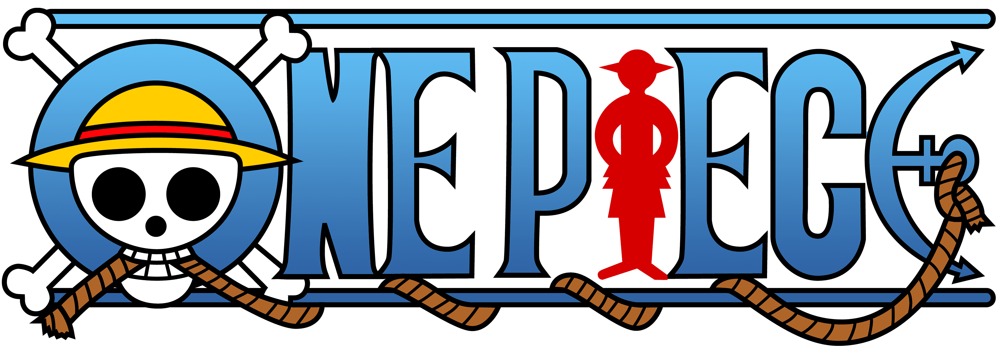

Sipnosis
Dawn Island is an island located in the East Blue and where the Goa Kingdom is situated.
It is the home island of Monkey D. Luffy and the starting point of his journey into piracy, as well as the home island of his father, Monkey D. Dragon. ...
This is also the adopted home of Portgas D. Ace after the death of his mother and the home of Sabo and his family.
Reverse Mountain is an extremely tall mountain at one of the points where the four Blues meet and is one of the two known entrances to the Grand Line.
It is located in the Red Line and is the geographical antipode of Mary Geoise.
Read All
Characters
See all

Monkey D. Luffy

Portgas D. Ace

Roronoa Zoro

Nico Robin
Islands
See all

Dawn Island
East Blue

Reverse Mountain
Red line
Reverse Mountain
Red line
Mist Objects
See all
Gomu Gomu No Mi
Is a Paramecia-type Devil Fruit that gives the user's body the properties of rubber, making the user a Rubber Human. It was then accidentally eaten by the series protagonist, Monkey D. Luffy.
Gomu Gomu No Mi
Is a Paramecia-type Devil Fruit that gives the user's body the properties of rubber, making the user a Rubber Human. It was then accidentally eaten by the series protagonist, Monkey D. Luffy.
Gomu Gomu No Mi
Is a Paramecia-type Devil Fruit that gives the user's body the properties of rubber, making the user a Rubber Human. It was then accidentally eaten by the series protagonist, Monkey D. Luffy.
Gomu Gomu No Mi
Is a Paramecia-type Devil Fruit that gives the user's body the properties of rubber, making the user a Rubber Human. It was then accidentally eaten by the series protagonist, Monkey D. Luffy.